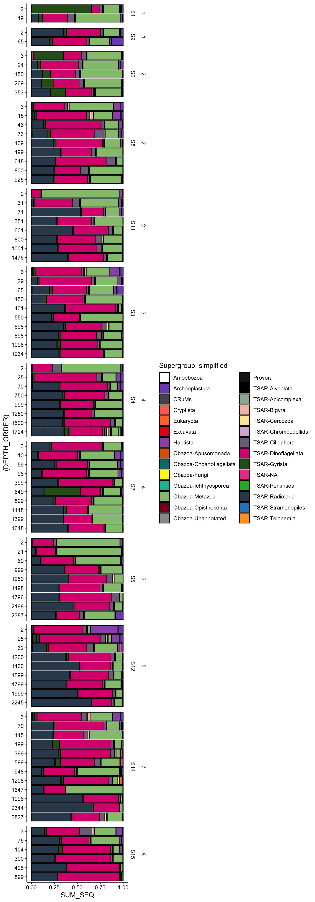
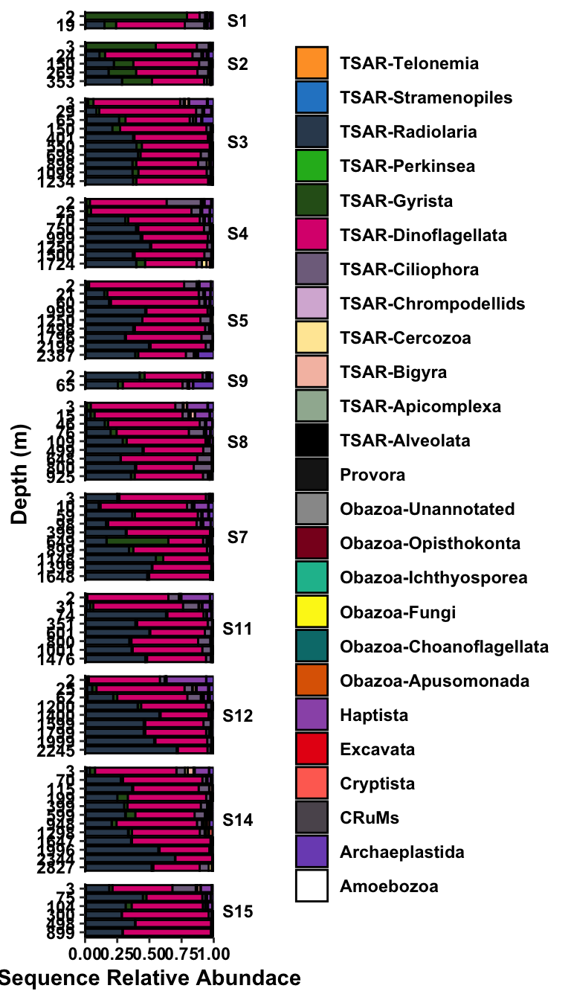

── Attaching core tidyverse packages ──────────────────────── tidyverse 2.0.0 ──
✔ dplyr 1.1.4 ✔ readr 2.1.5
✔ forcats 1.0.0 ✔ stringr 1.5.1
✔ ggplot2 3.5.2 ✔ tibble 3.2.1
✔ lubridate 1.9.4 ✔ tidyr 1.3.1
✔ purrr 1.0.4
── Conflicts ────────────────────────────────────────── tidyverse_conflicts() ──
✖ dplyr::filter() masks stats::filter()
✖ dplyr::lag() masks stats::lag()
ℹ Use the conflicted package (<http://conflicted.r-lib.org/>) to force all conflicts to become errors
library(compositions); library(patchwork);
Welcome to compositions, a package for compositional data analysis.
Find an intro with "? compositions"
Attaching package: 'compositions'
The following objects are masked from 'package:stats':
anova, cor, cov, dist, var
The following object is masked from 'package:graphics':
segments
The following objects are masked from 'package:base':
%*%, norm, scale, scale.default
Attaching package: 'plotly'
The following object is masked from 'package:ggplot2':
last_plot
The following object is masked from 'package:stats':
filter
The following object is masked from 'package:graphics':
layout
Loading required package: viridisLite
Loading required package: permute
Low taxonomic resolution should be at DIVISION level. Then to SUPERGROUP_CLASS level.
# Sum by taxonomic groupsasv_long_avg_wtax %>%group_by(PROX_TOSHORE, TRANSECT, STN_ORDER, DEPTH_ORDER, SAMPLE_ID, DEPTH, TEMP, Supergroup_simplified) %>%summarise(SUM_SEQ =sum(MEAN_REPS_seq),ASV_COUNT =n()) %>%ggplot(aes(y = (DEPTH_ORDER), x = SUM_SEQ, fill = Supergroup_simplified)) +geom_bar(stat ="identity", position ="fill", color ="black") +facet_grid(rows =vars(PROX_TOSHORE, STN_ORDER), space ="free", scales ="free") +scale_fill_manual(values = tax_color) +theme_classic() +theme(strip.background =element_blank(),axis.text =element_text(color ="black") )
`summarise()` has grouped output by 'PROX_TOSHORE', 'TRANSECT', 'STN_ORDER',
'DEPTH_ORDER', 'SAMPLE_ID', 'DEPTH', 'TEMP'. You can override using the
`.groups` argument.

asv_long_avg_wtax %>%group_by(STN_ORDER, DEPTH_ORDER, TEMP, Supergroup, Supergroup_simplified) %>%summarise(SUM_SEQ =sum(MEAN_REPS_seq),ASV_COUNT =n()) %>%filter(Supergroup_simplified !="Eukaryota") %>%filter(Supergroup_simplified !="TSAR-NA") %>%filter(Supergroup_simplified !="Obazoa-Metazoa") %>%ggplot(aes(y = (DEPTH_ORDER), x = SUM_SEQ, fill = Supergroup_simplified)) +geom_bar(stat ="identity", position ="fill", color ="black", width =0.8) +scale_fill_manual(values = tax_color) +scale_x_continuous(expand =c(0,0)) +facet_grid(rows =vars(STN_ORDER), scales ="free_y", space ="free", axis.labels ="all_x") +# facet_wrap(vars(STN_ORDER), ncol = 5, scales = "free_y", shrink = TRUE) +theme_classic() +theme(legend.position ="right",legend.title =element_blank(),legend.text =element_text(color ="black", face ="bold"),strip.background =element_blank(),strip.text.y =element_text(angle =0, color ="black", face ="bold"),axis.title =element_text(color ="black", face ="bold"),axis.text.y =element_text(color ="black", face ="bold"),axis.text.x =element_text(color ="black", face ="bold")) +guides(fill =guide_legend(reverse =TRUE, ncol =1)) +labs(x ="Sequence Relative Abundace", y ="Depth (m)")
`summarise()` has grouped output by 'STN_ORDER', 'DEPTH_ORDER', 'TEMP',
'Supergroup'. You can override using the `.groups` argument.

4.2 Only surface parameters
asv_long_avg_wtax %>%filter(DEPTH <5) %>%group_by(stn, STN_ORDER, Supergroup_simplified, TRANSECT) %>%summarise(SUM_SEQ =sum(MEAN_REPS_seq),ASV_COUNT =n()) %>%filter(Supergroup_simplified !="Eukaryota") %>%filter(Supergroup_simplified !="TSAR-NA") %>%filter(Supergroup_simplified !="Obazoa-Metazoa") %>%ggplot(aes(x = STN_ORDER, y = SUM_SEQ, fill = Supergroup_simplified)) +geom_bar(stat ="identity", position ="fill", color ="black", width =0.5) +scale_fill_manual(values = tax_color) +scale_y_continuous(expand =c(0,0)) +facet_grid(cols =vars(TRANSECT), scales ="free", space ="free") +# facet_wrap(vars(STN_ORDER), ncol = 5, scales = "free_y", shrink = TRUE) +theme_classic() +theme(legend.position ="left",legend.title =element_blank(),legend.text =element_text(color ="black", face ="bold"),strip.background =element_blank(),strip.text.y =element_text(angle =0, color ="black", face ="bold"),axis.title =element_text(color ="black", face ="bold"),axis.text.y =element_text(color ="black", face ="bold"),axis.text.x =element_text(color ="black", face ="bold")) +# guides(fill = guide_legend(reverse = TRUE, ncol = 1)) +labs(x ="Station", y ="Relative Sequence Abundance")
`summarise()` has grouped output by 'stn', 'STN_ORDER',
'Supergroup_simplified'. You can override using the `.groups` argument.
RDA reveals relationships among the sites and the environmental parameters. We can explore the relationship among all ASV signatures by site, and then model the effect that each environmental parameter has on it.
OUTPUT: anova.cca(rda_all_gom, step = 100, by = “term”) Permutation test for rda under reduced model Terms added sequentially (first to last) Permutation: free Number of permutations: 999
Show in New Window Loading objects: samples_too_low env_info asv_wide_cleaned asv_long_cleaned Show in New Window A tibble:6 × 30 TRANSECT PROX_TOSHORE STN_ORDER STN_CATEGORY_3 transect1 1 1 Coastal transect1 1 1 Coastal transect1 1 1 Coastal transect1 1 1 Coastal transect1 1 1 Coastal transect1 1 1 Coastal 6 rows | 1-4 of 30 columns tbl_df 6 x 30 [1] “Dinoflagellata” “Gyrista” “Ciliophora” “Bigyra”
[5] “Metazoa” “Chlorophyta” “Choanoflagellata” “Radiolaria”
[9] “Centroplasthelida” “Telonemia” NA “Cercozoa”
[13] “Haptophyta” “Cryptophyta” “Kathablepharida” “Fungi”
[17] “Opisthokonta” “Picozoa” “Prasinodermophyta” “Rhodophyta”
[21] “Ancyromonadida” “Stramenopiles” “Discoba” “Apusomonada”
[25] “Ichthyosporea” “Apicomplexa” “X” “Chrompodellids”
[29] “Perkinsea” “Collodictyonidae” “Alveolata” “Streptophyta”
[33] “Discosea” “Euglenozoa” “Nebulidia” “Tubulinea”
[37] “Nibbleridia” “Evosea”
R Console [1] “Dinoflagellata” “Gyrista” “Ciliophora” “Bigyra”
[5] “Metazoa” “Chlorophyta” “Choanoflagellata” “Radiolaria”
[9] “Centroplasthelida” “Telonemia” NA “Cercozoa”
[13] “Haptophyta” “Cryptophyta” “Kathablepharida” “Fungi”
[17] “Opisthokonta” “Picozoa” “Prasinodermophyta” “Rhodophyta”
[21] “Ancyromonadida” “Stramenopiles” “Discoba” “Apusomonada”
[25] “Ichthyosporea” “Apicomplexa” “X” “Chrompodellids”
[29] “Perkinsea” “Collodictyonidae” “Alveolata” “Streptophyta”
[33] “Discosea” “Euglenozoa” “Nebulidia” “Tubulinea”
[37] “Nibbleridia” “Evosea”
Show in New Window summarise() has grouped output by ‘STN_ORDER’, ‘DEPTH_ORDER’, ‘TEMP’, ‘Supergroup’. You can override using the .groups argument. R Console
Show in New Window [1] 2.482 18.603 353.454 2.900 269.068 149.888 24.170 2.579 401.190 150.128 [11] 64.991 29.003 25.322 2.231 70.191 59.472 9.882 2.746 399.476 98.397 [21] 15.176 2.641 498.597 109.038 76.433 45.819 65.347 2.195 Show in New Window summarise() has grouped output by ‘Station’, ‘DEPTH’, ‘FeatureID’, ‘Supergroup_simplified’, ‘TEMP’, ‘SALINITY’, ‘OXYGEN’, ‘STN_CATEGORY_4’. You can override using the .groups argument. summarise() has grouped output by ‘Station’, ‘DEPTH’, ‘TEMP’, ‘SALINITY’, ‘STN_CATEGORY_4’. You can override using the .groups argument. R Console
Warning G2;H2;Warningh: [38;5;251mThe shape palette can deal with a maximum of 6 discrete values because more than 6 becomes difficult to discriminate [36mℹ[38;5;251m you have requested 7 values. Consider specifying shapes manually if you need that many of them.[39mg G2;H2;Warningh: [38;5;251mRemoved 2 rows containing missing values or values outside the scale range (geom_point()).[39mg
Show in New Window [1] “S15” “S1” “S11” “S12” “S14” “S2” “S3” “S4” “S5” “S7” “S8” “S9” Show in New Window
Show in New Window summarise() has grouped output by ‘Station’, ‘FeatureID’, ‘Supergroup_simplified’, ‘DEPTH_ORDER’, ‘TRANSECT’. You can override using the .groups argument. summarise() has grouped output by ‘Station’, ‘Supergroup_simplified’, ‘DEPTH_ORDER’, ‘TRANSECT’. You can override using the .groups argument. R Console
Show in New Window summarise() has grouped output by ‘TRANSECT’, ‘STN_ORDER’, ‘DEPTH_ORDER’, ‘FeatureID’, ‘stn’, ‘nisk’, ‘Station’, ‘Niskin’, ‘DEPTH’, ‘TEMP’, ‘SALINITY’, ‘OXYGEN’, ‘NH4’, ‘NO2’, ‘NO3’, ‘PO4’, ‘SIL’, ‘Taxon’, ‘DIVISION’, ‘SUPERGROUP_CLASS’, ‘Supergroup’, ‘Division’, ‘Subdivision’. You can override using the .groups argument. Show in New Window summarise() has grouped output by ‘TRANSECT’, ‘STN_ORDER’, ‘DEPTH_ORDER’, ‘FeatureID’, ‘stn’, ‘nisk’, ‘Station’, ‘Niskin’, ‘DEPTH’, ‘TEMP’, ‘SALINITY’, ‘OXYGEN’, ‘NH4’, ‘NO2’, ‘NO3’, ‘PO4’, ‘SIL’, ‘Taxon’, ‘DIVISION’, ‘SUPERGROUP_CLASS’, ‘Supergroup’, ‘Division’, ‘Subdivision’. You can override using the .groups argument. Show in New Window
`summarise()` has grouped output by 'FeatureID', 'Taxon', 'SUPERGROUP_CLASS',
'Supergroup_simplified', 'stn', 'Station', 'Latitude', 'Longitude', 'Transect'.
You can override using the `.groups` argument.
`summarise()` has grouped output by 'stn', 'Station', 'Latitude', 'Longitude',
'SURFACE_TEMP', 'Transect'. You can override using the `.groups` argument.
Longitude Latitude TEMPERATURE
1 86.99000 27.839 30
2 86.99826 27.839 NA
3 87.00652 27.839 NA
4 87.01478 27.839 NA
5 87.02304 27.839 NA
6 87.03130 27.839 NA
`summarise()` has grouped output by 'FeatureID', 'Taxon', 'SUPERGROUP_CLASS',
'Supergroup_simplified', 'stn', 'Station', 'Latitude', 'Longitude', 'Transect'.
You can override using the `.groups` argument.
`summarise()` has grouped output by 'stn', 'Station', 'Latitude', 'Longitude',
'SURFACE_TEMP', 'SURFACE_SAL', 'SURFACE_OXY', 'SURFACE_NH4', 'SURFACE_NO2',
'SURFACE_PO4', 'Transect'. You can override using the `.groups` argument.
:::
# Put PARAM in quotesinterpolate_lat_long_env <-function(df, PARAM, TITLE){# Interpolate output_mba <-mba.surf(df[c("Longitude", "Latitude", PARAM)], no.X =300, no.Y =300, extend = F)# Extract interpolated valuesdimnames(output_mba$xyz.est$z) <-list(output_mba$xyz.est$x, output_mba$xyz.est$y)# envs_interpol <- reshape2::melt(output_mba$xyz.est$z, varnames =c("Longitude", "Latitude"), value.name = PARAM) %>%select(Longitude, Latitude, VALUE =!!PARAM) %>%mutate(VALUE =round(VALUE, 1))# MAPggplot(data = (world %>%filter(subunit =="United States"))) +geom_sf(color ="black", linewidth =0.6, fill ="grey10", alpha =0.6) +# Set lat long region to show:coord_sf(xlim =c(-90, -86.75), ylim =c(27.5, 29.5), expand =FALSE) +# Overlay with temperature geom_raster(data = envs_interpol, aes(fill = VALUE, x = Longitude, y = Latitude)) +geom_contour(data = envs_interpol, aes(z = VALUE, x = Longitude, y = Latitude), binwidth =2, colour ="black", alpha =0.2) +geom_contour(data = envs_interpol, aes(z = VALUE,x = Longitude, y = Latitude), breaks =20, colour ="black") +# Add data points for stationsgeom_point(data = surface_odv, aes(x = Longitude, y = Latitude)) +geom_text(data = surface_odv, aes(x = Longitude, y = Latitude, label = surface_odv$stn), position =position_dodge(width =0.1),hjust =0.5, vjust =1, color="black") +scale_fill_gradientn(colours =rev(ODV_colours), na.value=NA) +labs(y ="Latitude (°N)", x ="Longitude (°W)", fill = TITLE) +scale_x_reverse() +theme_classic() +theme(axis.text =element_text(size =10, colour="black"),panel.background =element_rect(fill ="#B4C7D9"),panel.border =element_rect(fill =NA),aspect.ratio =1)}
Parameters to use in function: SURFACE_TEMP, SURFACE_SAL, SURFACE_OXY, SURFACE_NH4, SURFACE_NO2, SURFACE_PO4
`summarise()` has grouped output by 'FeatureID', 'Taxon', 'SUPERGROUP_CLASS',
'Supergroup_simplified', 'stn', 'Station', 'Latitude', 'Longitude', 'Transect'.
You can override using the `.groups` argument.
`summarise()` has grouped output by 'stn', 'Station', 'Latitude', 'Longitude',
'SURFACE_TEMP', 'SURFACE_SAL', 'SURFACE_OXY', 'SURFACE_NH4', 'SURFACE_NO2',
'SURFACE_PO4', 'Transect'. You can override using the `.groups` argument.
Interpolate function for ASVs:
# Put PARAM in quotesinterpolate_lat_long_asv <-function(df, PARAM, TITLE){# Interpolate output_mba <-mba.surf(df[c("Longitude", "Latitude", PARAM)], no.X =150, no.Y =150, extend = F)# Extract interpolated valuesdimnames(output_mba$xyz.est$z) <-list(output_mba$xyz.est$x, output_mba$xyz.est$y)# envs_interpol <- reshape2::melt(output_mba$xyz.est$z, varnames =c("Longitude", "Latitude"), value.name = PARAM) %>%select(Longitude, Latitude, VALUE =!!PARAM) %>%mutate(VALUE =round(VALUE, 1))# MAPggplot(data = (world %>%filter(subunit =="United States"))) +geom_sf(color ="black", linewidth =0.6, fill ="grey10", alpha =0.6) +# Set lat long region to show:coord_sf(xlim =c(-90, -86.75), ylim =c(27.5, 29.5), expand =FALSE) +# Overlay with temperature geom_raster(data = envs_interpol, aes(fill = VALUE, x = Longitude, y = Latitude)) +geom_contour(data = envs_interpol, aes(z = VALUE, x = Longitude, y = Latitude), binwidth =2, colour =NA, alpha =0.2) +geom_contour(data = envs_interpol, aes(z = VALUE,x = Longitude, y = Latitude), breaks =20, colour =NA) +# Add data points for stationsgeom_point(data = surface_odv, aes(x = Longitude, y = Latitude)) +geom_text(data = surface_odv, aes(x = Longitude, y = Latitude, label = surface_odv$stn), position =position_dodge(width =0.1),hjust =0.5, vjust =1, color="black") +scale_fill_fermenter(type ="seq", palette ="Reds", direction =1, na.value =NA) +# scale_fill_gradientn(colours = rev(ODV_colours), na.value=NA) +labs(y ="Latitude (°N)", x ="Longitude (°W)", fill = TITLE) +scale_x_reverse() +theme_classic() +theme(axis.text =element_text(size =10, colour="black"),panel.background =element_rect(fill ="#B4C7D9"),panel.border =element_rect(fill =NA),aspect.ratio =1)}
`summarise()` has grouped output by 'FeatureID', 'Taxon', 'SUPERGROUP_CLASS',
'Supergroup_simplified', 'stn', 'Station', 'Latitude', 'Longitude', 'Transect'.
You can override using the `.groups` argument.
`summarise()` has grouped output by 'stn', 'Station', 'Latitude', 'Longitude',
'Transect', 'TRANSECT'. You can override using the `.groups` argument.
`summarise()` has grouped output by 'FeatureID', 'Taxon', 'SUPERGROUP_CLASS',
'stn', 'Station', 'Latitude', 'Longitude', 'Transect'. You can override using
the `.groups` argument.
`summarise()` has grouped output by 'stn', 'Station', 'Latitude', 'Longitude',
'Transect', 'TRANSECT'. You can override using the `.groups` argument.
`summarise()` has grouped output by 'FeatureID', 'Taxon', 'SUPERGROUP_CLASS',
'Supergroup_simplified', 'stn', 'Station', 'Latitude', 'Longitude', 'Transect',
'TRANSECT'. You can override using the `.groups` argument.
`summarise()` has grouped output by 'stn', 'Station', 'Latitude', 'Longitude',
'TEMP', 'SAL', 'OXY', 'NH4', 'NO2', 'PO4', 'Transect', 'TRANSECT'. You can
override using the `.groups` argument.
`summarise()` has grouped output by 'FeatureID', 'Taxon', 'SUPERGROUP_CLASS',
'Supergroup_simplified', 'stn', 'Station', 'Latitude', 'Longitude', 'Transect',
'TRANSECT'. You can override using the `.groups` argument.
`summarise()` has grouped output by 'stn', 'Station', 'Latitude', 'Longitude',
'Transect', 'TRANSECT', 'DEPTH'. You can override using the `.groups` argument.
x = lat y = long fill/contour value = number of ASVs total. ::: {.cell}
contour_df <- asv_long_clean_wtax %>%# Average across replicatesgroup_by(FeatureID, Taxon, SUPERGROUP_CLASS, Supergroup_simplified, stn, Station, DEPTH, Latitude, Longitude, DIST_OUTFLOW) %>%summarise(AVG_SEQ =mean(SEQUENCE_COUNT)) %>%ungroup() %>%# Get totalsgroup_by(stn, Station, DEPTH, Latitude, Longitude, DIST_OUTFLOW) %>%summarise(ASV_COUNT =n())
`summarise()` has grouped output by 'FeatureID', 'Taxon', 'SUPERGROUP_CLASS',
'Supergroup_simplified', 'stn', 'Station', 'DEPTH', 'Latitude', 'Longitude'.
You can override using the `.groups` argument.
`summarise()` has grouped output by 'stn', 'Station', 'DEPTH', 'Latitude',
'Longitude'. You can override using the `.groups` argument.
Warning: `stat_contour()`: Zero contours were generated
Warning in min(x): no non-missing arguments to min; returning Inf
Warning in max(x): no non-missing arguments to max; returning -Inf
Warning: `stat_contour()`: Zero contours were generated
Warning in min(x): no non-missing arguments to min; returning Inf
Warning in max(x): no non-missing arguments to max; returning -Inf
Warning: Raster pixels are placed at uneven horizontal intervals and will be shifted
ℹ Consider using `geom_tile()` instead.
Raster pixels are placed at uneven horizontal intervals and will be shifted
ℹ Consider using `geom_tile()` instead.